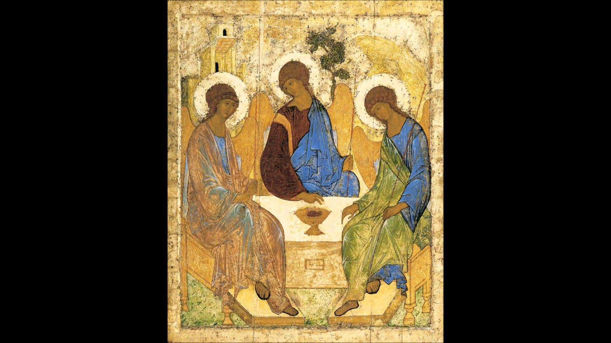

КАРТИНЫ
Добро пожаловать!
Мона лиза
«Мо́на Ли́за», или «Джоко́нда» (итал. Mona Lisa, La Gioconda, полное название — «Портре́т госпожи́ Ли́зы дель Джоко́ндо», итал. Ritratto di Monna Lisa del Giocondo)[2] — картина Леонардо да Винчи, одно из самых известных произведений живописи[3][4]. Точная дата написания неизвестна (по некоторым сведениям, написана между 1503 и 1505 годами). Ныне хранится в Лувре. Считается, что на картине изображена Лиза Герардини, супруга флорентийского торговца шёлком Франческо дель Джокондо.

Подробнее...
Троица
Тро́ица» (также «Гостеприи́мство Авраа́ма») — икона Святой Троицы, написанная Андреем Рублёвым в XV веке, самое знаменитое[1] из его произведений и одна из двух (вместе с фресками во Владимире) сохранившихся работ, которые, как считают учёные[2], достоверно принадлежат ему. Является одной из самых прославленных русских икон.

Подробнее...